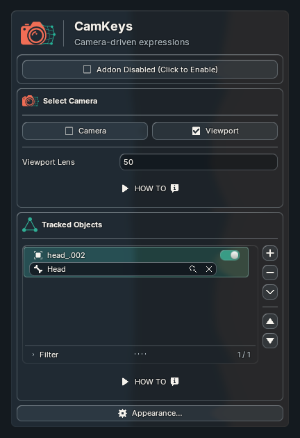
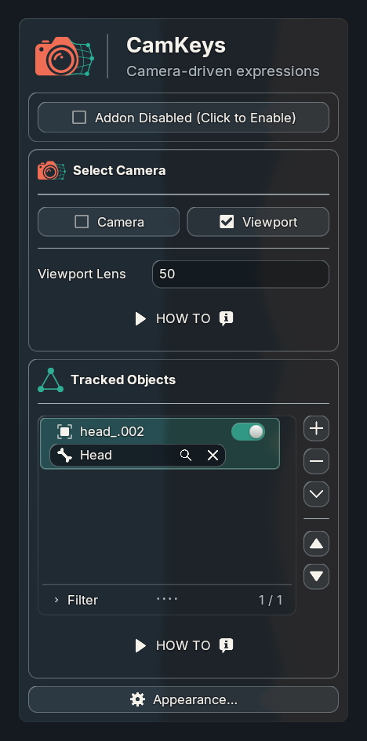
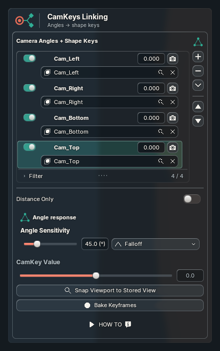
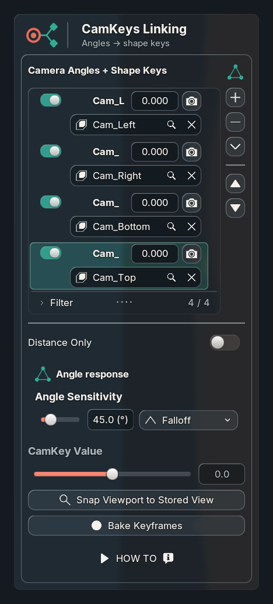
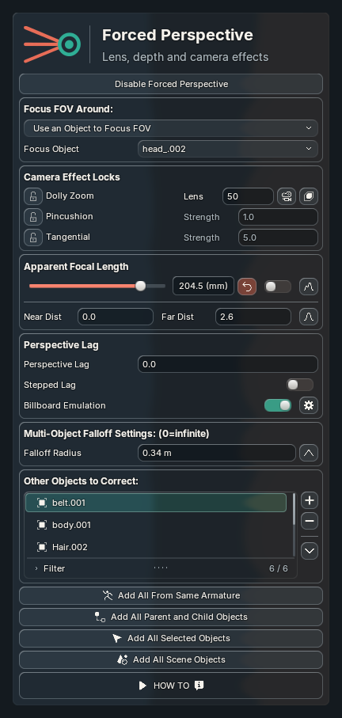
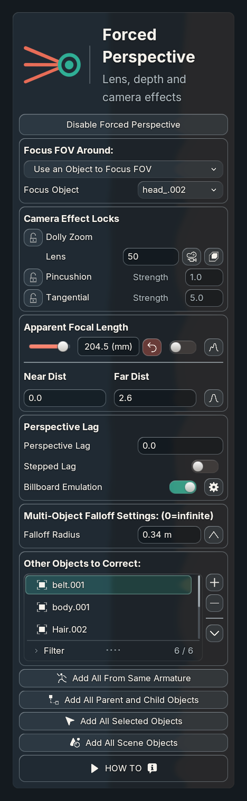
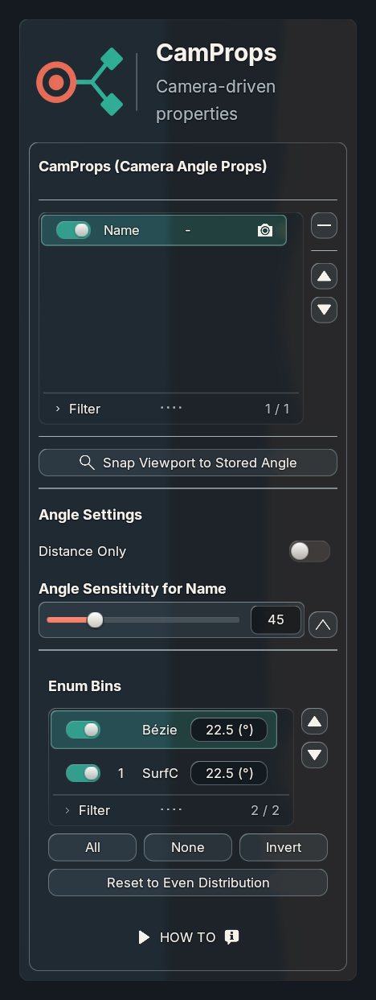
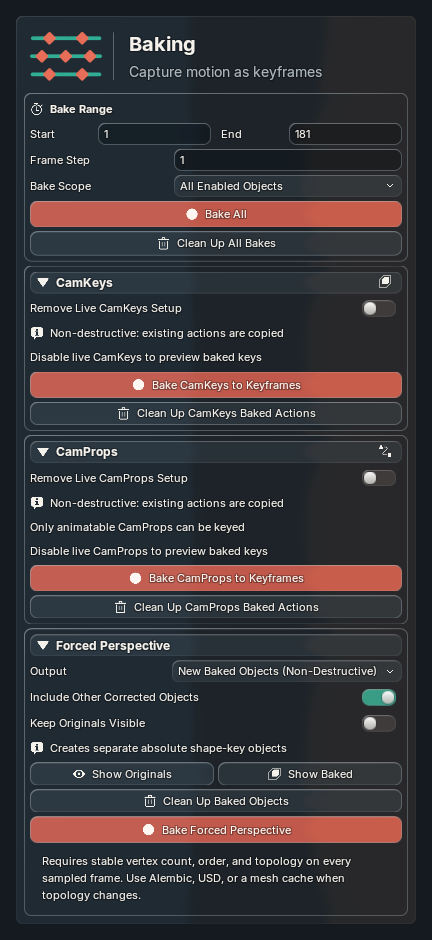
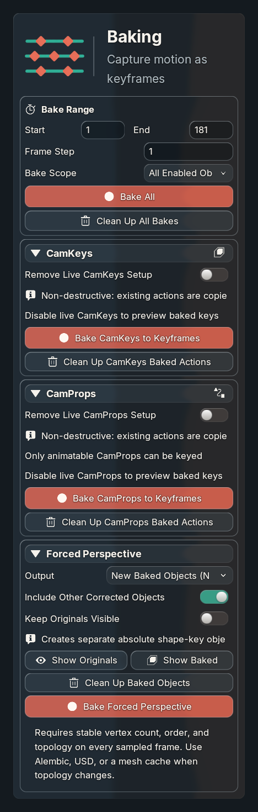

CamKeys
Full panel and narrow layout


Reference-sized logo and typography, muted subtitle ink, a vertical divider on all five headers, and icon/text blocks aligned vertically. Each element is configured through Beyond UI inputs. Narrow titles wrap without overlapping subtitles.
Reusable API and configuration · Tests and limits · Measured alignment · Updated overview and estimate
383 unit tests; actual Blender 5.2.2 captures at 1×/2× (400 logical units), and 1.5× (280). No focus changes recorded. The reference crops below are normalized to the same panel width. Dividers on the main and secondary panels are your requested addition beyond those references. Original artwork remains unchanged.









These are actual GPU-rendered panels from a disposable copy of the saved Uraraka file. Your live scene was not saved. Font glyphs, lighting and backdrop remain different from the generated artwork; this is a closer measured layout match, not a claim of identical pixels.